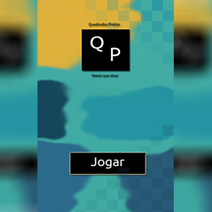
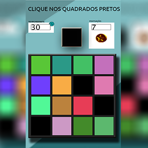
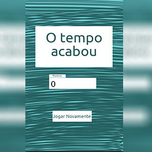

Processing
Processing é uma ferramenta para jovens programadores programarem e terem sua introdução à computação gráfica, na disciplina de Experiência Criativa nos foi requisitado um trabalho em grupo que incluísse os diversos tipos de Mídias, Texto, Imagens, Sons, Animação e Vídeo, então eu e o meu grupo resolvemos criar dois projetos diferentes, o que eu foquei foi um projeto com base no White Tiles! os integrantes do grupo eram: Guilherme Schwarz, Leandro Gustavo Bajuque e Kayo Renato Bortolan Cezario, Links para baixar as duas versões do grupo estarão em seguida!
